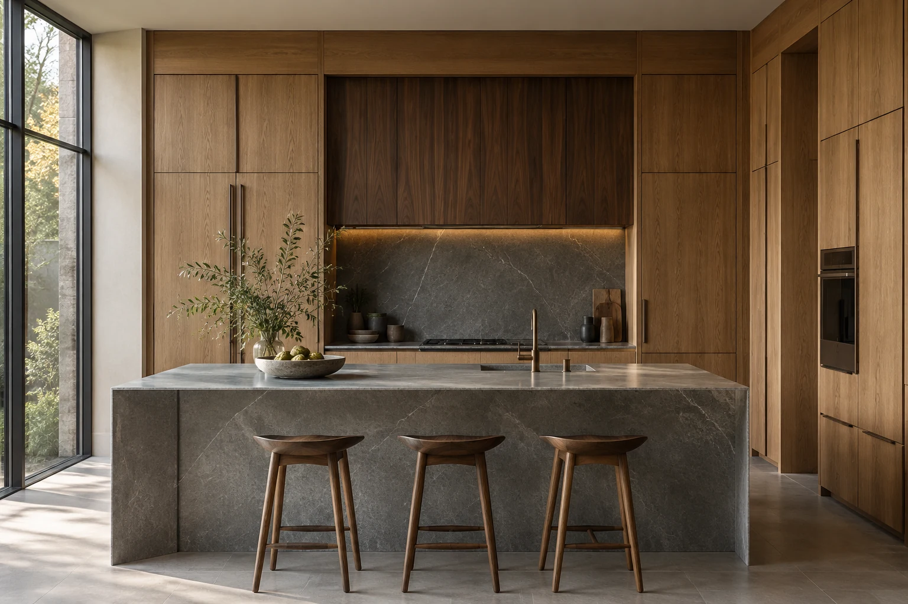
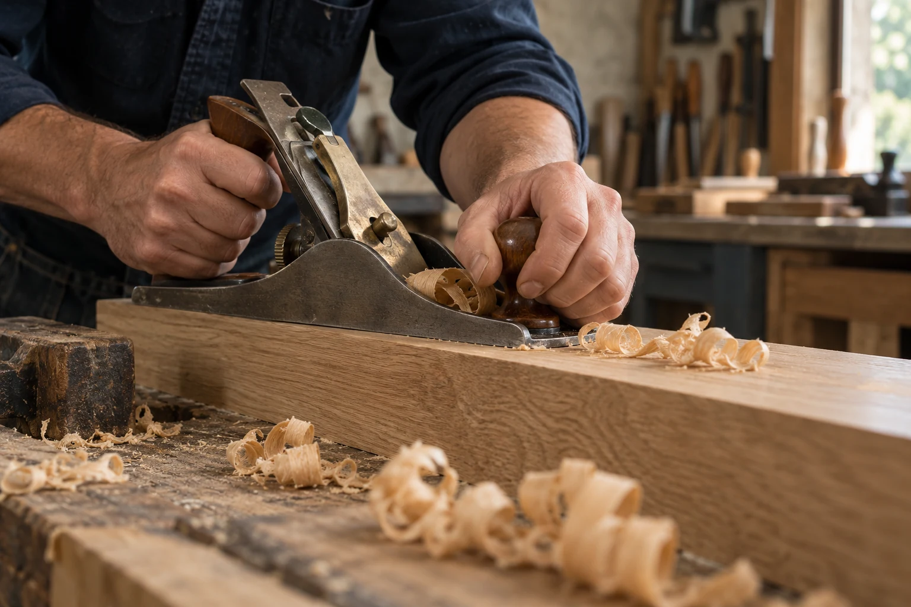

DURCHDACHT. GEFERTIGT. EINGEPASST.
Gutes Handwerk.
Passt ins Leben.
Küchen, Möbel und Innenausbau nach Maß.
Für Räume, die nicht nur gut aussehen,
sondern jeden Tag funktionieren.
BIS ZUM LETZTEN GRIFF.

01 — WAS WIR MACHEN
Kein Raum ist gleich.
Warum sollten es
Ihre Möbel sein?
Die Nische unter der Treppe. Eine Küche mit kurzen Wegen. Ein Arbeitsplatz, der abends verschwindet. Gute Planung beginnt dort, wo Standardmaße aufhören.
02 — FORM IN FUNKTION
So kann Maßarbeit
aussehen.
Zwei Entwürfe, eine Haltung: klare Formen,
sinnvolle Details und Holz mit Charakter.
KI-generierte Konzepte, keine ausgeführten Referenzen.

03 — DAS HANDWERK DAHINTER
Die Qualität
steckt im Detail.
Eine saubere Kante. Ein gleichmäßiges Fugenbild. Eine Tür, die sich richtig schließt. Das sind keine Nebensachen – das ist das Möbel.
Material bewusst wählen
Holzart, Oberfläche und Beschläge passend zu Nutzung und Raum.
Präzise zusammenbringen
Von der Verbindung im Korpus bis zum Anschluss an die Wand.
Für den Alltag denken
Erreichbarer Stauraum, angenehme Griffhöhen und pflegeleichte Flächen.
04 — DER WEG ZUM ERGEBNIS
Von „Ich hätte gern“
zu „Genau so“.
Ein klarer Ablauf macht Entscheidungen leichter.
Schritt für Schritt, gemeinsam gedacht.
IHR RAUM. IHR NÄCHSTES PROJEKT.
Es beginnt mit
einer guten Idee.
Eine Küche neu denken? Mehr Platz schaffen? Ein Möbel genau passend machen?
FORM / WERK ist ein fiktiver Handwerksbetrieb als Beispiel für LL Collective Studio. Hier werden keine echten Aufträge angenommen. Bei einem realen Betrieb stehen an dieser Stelle die direkten Kontaktdaten und eine Projektanfrage.